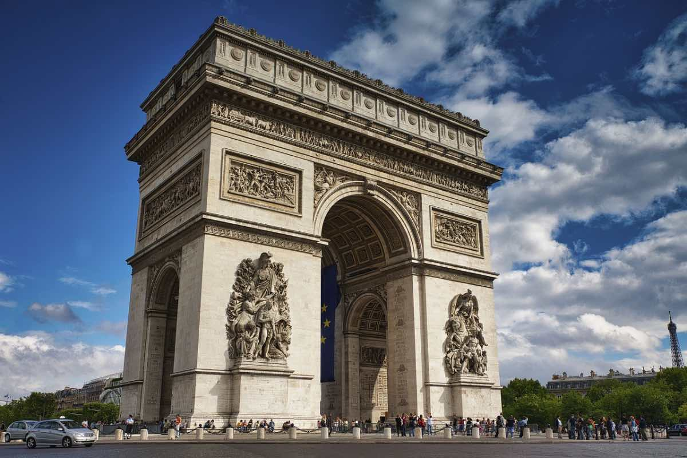
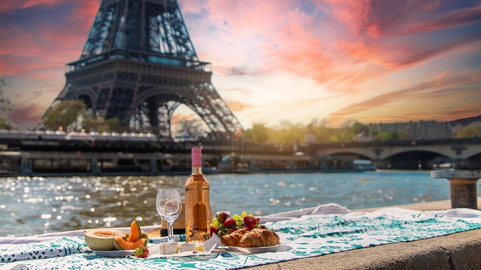

Arte e Literatura: A França é famosa por sua contribuição à arte e literatura. Grandes nomes como Claude Monet, Auguste Rodin, Marcel Proust e Albert Camus são apenas alguns exemplos. Paris é conhecida como a "Cidade das Artes" e abriga alguns dos museus mais renomados do mundo, incluindo o Louvre.

